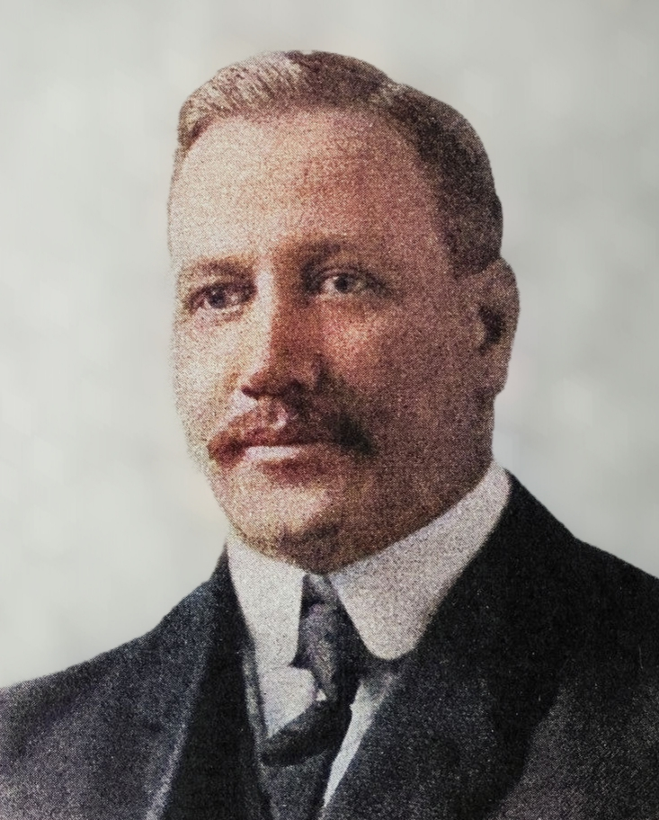

Считается, что волейбол возник благодаря Уильяму Дж. Моргану, преподавателю физического воспитания одного из колледжей Холиока (США). В 1895 году на одном из своих уроков он подвесил сетку (примерно на высоте 2 метра) и предложил своим ученикам перебрасывать через неё баскетбольную камеру. Получившуюся игру Морган назвал «Минтонет».  Спустя два года был разработан и запущен в производство первый волейбольный мяч. Во второй половине 1920-х годов появились национальные федерации Болгарии, СССР, США и Японии. В 1922 году в Бруклине были проведены первые международные соревнования, это был чемпионат YMCA с участием 23 мужских команд. В 1925 году были утверждены современные размеры площадки, а также размеры и вес волейбольного мяча. Эти правила были актуальны для стран Америки, Африки и Европы. В 1947 основана международная федерация по волейболу (FIVB). Членами федерации стали: Бельгия, Бразилия, Венгрия, Египет, Италия, Нидерланды, Польша, Португалия, Румыния, США, Уругвай, Франция, Чехословакия и Югославия. В 1949 году в Праге состоялся первый чемпионат мира среди мужчин, а в 1964 году волейбол был включен в программу Олимпийских игр в Токио. В международных соревнованиях 1960—1970-х годов наибольших успехов добивались национальные сборные команды СССР, Чехословакии, Польши, Румынии, Болгарии, Японии. С 1990-х годов список сильнейших команд пополнился Бразилией, США, Кубой, Италией, Нидерландами, Югославией. С 2006 года FIVB объединяет 220 национальных федераций волейбола, игра является одним из самых популярных видов спорта на Земле.